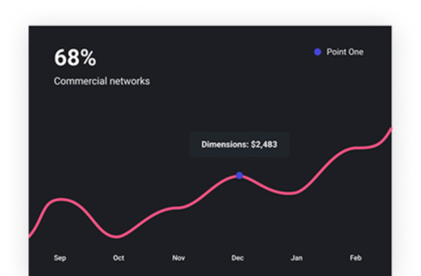
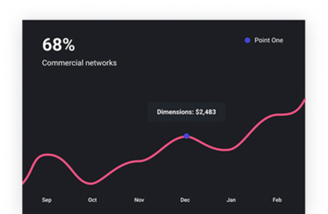
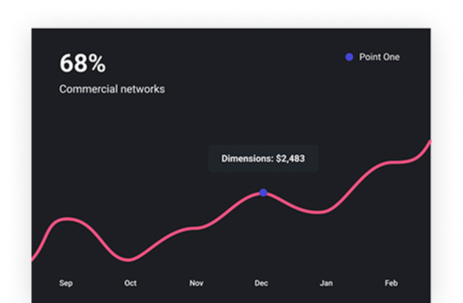

Home
Product
About
Contact
Login
Work at the speed of thought
Most calendars are designed for teams. Slate is designed for freelancers who want a simple way to plan their schedule.
Try For Free
Learn More
FEATURES
Most calendars are designed for teams. Slate is designed for freelancers who want a simple way to plan their schedule.

A single source of truth
When you add work to your Slate calendar we automatically calculate useful insights
Intuitive interface
When you add work to your Slate calendar we automatically calculate useful insights
Or with rules
When you add work to your Slate calendar we automatically calculate useful insights
Чушпаны
 
